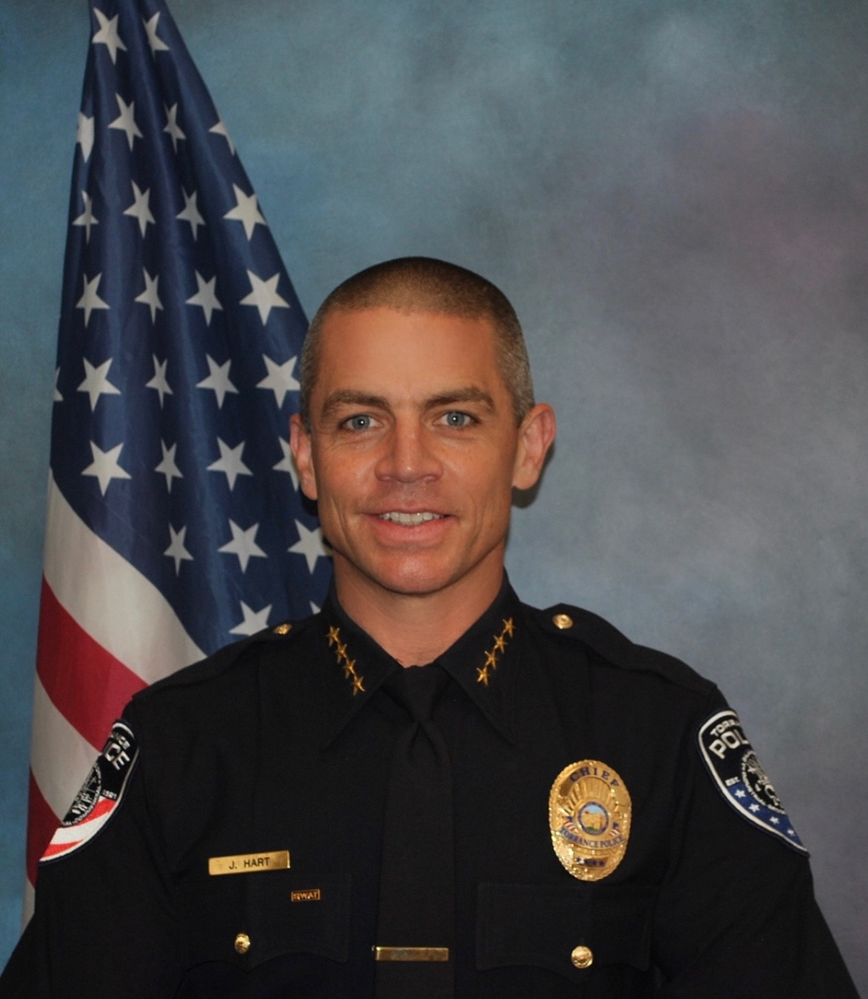
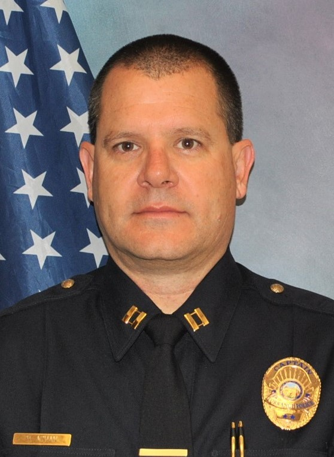
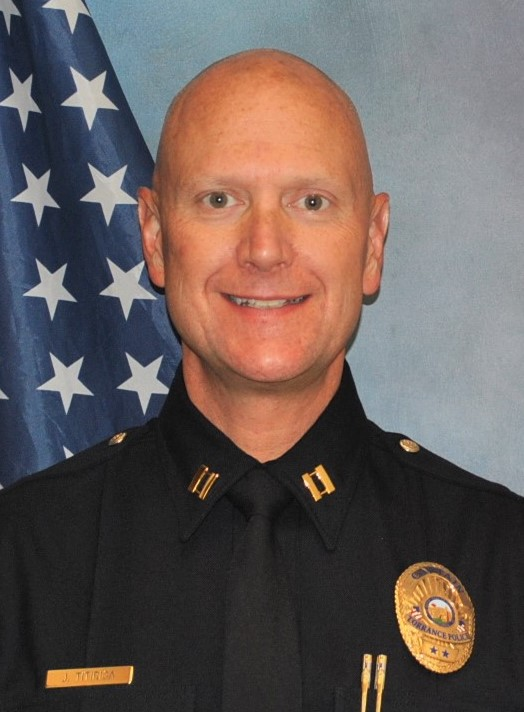

Below is the Chief and Command Staff
JEREMIAH 'JAY' HART - CHIEF OF POLICE

Chief Jay Hart was born and raised in the City of Torrance. After graduating from Torrance High School, he joined the United States Marine Corps. Chief Hart was responsible for conducting threat assessments and site security as a member of the United States Marine Corps Fleet Anti-Terrorism Security Team. After several operational deployments, he served with Marine Corps Special Operations, 2nd Force Reconnaissance Company.
Chief Hart began his public safety career when he joined the Pasadena Police Department. He later transferred to the Torrance Police Department to serve and give back to his hometown. Since joining the Torrance Police Department, he has held various assignments such as Patrol, Motors, Police Academy Instructor, Field Training Officer, Research and Training, Public Information Officer, Personnel, Firearms/Use of Force Instructor, Crisis Negotiations, and SWAT Commander.
Chief Hart holds a Bachelor's Degree in Applied Studies-Communications from California State University, Dominguez Hills, and a Master's Degree, in Homeland Security and Defense from the Naval Postgraduate School in Monterey, California.
Command Staff
CAPTAIN MARTIN VUKOTIC
Captain Martin V. Vukotic began his law enforcement career with the Palos Verdes Estates Police Department in 1992 and joined the Torrance Police Department in 1995. Captain Vukotic has worked assignments as an officer in Patrol (Field Assignments, Field Training Officer, and SWAT) and Special Investigations Division (Vice and Narcotics and Intelligence Sections). He was promoted to Sergeant in November 2005 and worked assignments in Patrol (Field Supervisor, Field Training Sergeant, SWAT, and Gang Detail), and the Chiefs Office (Community Lead Officer Detail).
He was promoted to Lieutenant December 2010 and worked assignments in Patrol (Area Commander, SWAT, and Gang Detail), and as Special Investigations Division Commander. He was promoted to Captain June 2014 and served as the Patrol Bureau Commander until January 2016. He is currently assigned as the Support Services Bureau Commander. Captain Vukotic has a Bachelor of Arts degree in Criminal Justice Management from Union Institute and University.
CAPTAIN MARK UNDERWOOD

Captain Mark Underwood began his law enforcement career with the Torrance Police Department in 1999. He has worked assignments as an officer in Patrol (Field Assignments, Field Training Officer and Gang Enforcement Team), and Detectives (School Resource Officer, Burglary and Auto Theft).
He was promoted to Sergeant in January 2009 and worked assignments in Patrol (Field Supervisor and Gang Enforcement Team Supervisor), Research and Training, and Personnel (Internal Affairs). He was promoted to Lieutenant in September 2012 and worked assignments in Patrol (Area Commander and Gang Detail Commander), and as the Traffic and Special Events Division Commander. He was promoted to Captain in January 2016 and is currently assigned as the Administrative Services Bureau Commander. Captain Underwood has a Bachelor of Arts degree in Criminal Justice from California State University of Fullerton.
CAPTAIN MARK ATHAN

Captain Mark Athan began his Sworn law enforcement career with the Torrance Police Department in 1991. Prior to his Sworn duties, he volunteered as an Explorer and served as a Civilian Services Officer for the Department. He has worked assignments as an officer in Patrol (Field Assignments, Field Training Officer and Shopping Center Detail), and as a detective within the Special Operations Bureau. He was promoted to Sergeant in 2003 and worked assignments in Patrol (Field Supervisor and Patrol Coordinator).
He was promoted to Lieutenant in 2008 and worked assignments in Patrol (Area Commander, SWAT and Crisis Negotiations). He also served as the Community Affairs Division Commander, Research & Training Division Commander, and Communications Division Commander. He was promoted to Captain in 2018 and is currently assigned as the Special Operations Bureau Commander. Captain Athan has a Master’s Degree in Emergency Services Administration from California State University of Long Beach.
CAPTAIN JIM TITIRIGA

Captain Jim Titiriga began his law enforcement career with the Torrance Police Department in 1995. Prior to his sworn duties, he served our country as a United States Marine. He has worked assignments as an officer in Patrol (Field Assignments, SWAT and Field Training Officer), and as a detective within the Special Investigations Division (Vice and Narcotics). He was promoted to Sergeant in 2006 and worked assignments in Patrol (Field Supervisor and SWAT), Internal Affairs and Community Lead Officer Detail.
He was promoted to Lieutenant in 2013 and worked assignments in Patrol (Area Commander, SWAT, Crisis Negotiations Team and Gang Detail). He also served as the Patrol Administrative Commander, Personnel Division Commander and Services Division Commander. He was promoted to Captain in 2020 and is currently assigned as the Patrol Bureau Commander. Captain Titiriga is a graduate from the FBI National Academy - Class #270, and he has a Master’s Degree in Emergency Services Administration from California State University of Long Beach.